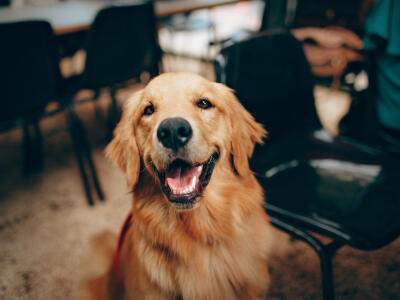
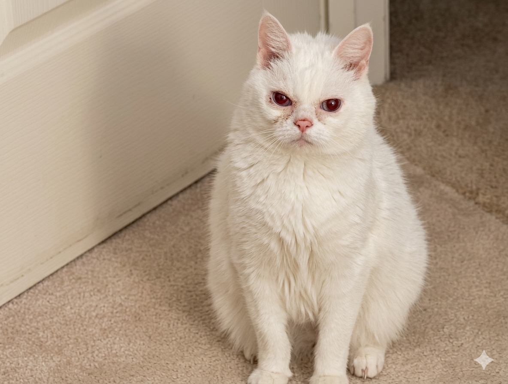

🏠 Espacio adecuado
Asegúrate de tener un lugar seguro y cómodo donde tu mascota pueda vivir.
Cada mascota merece una segunda oportunidad. Conoce a nuestros peluditos que esperan por ti.
Ver mascotas disponiblesAdoptar es un compromiso de vida. Antes de dar el paso, infórmate bien.
Asegúrate de tener un lugar seguro y cómodo donde tu mascota pueda vivir.
Las mascotas necesitan atención diaria: paseos, juegos, alimentación y cariño.
Considera los gastos en alimentación, vacunas, controles veterinarios y emergencias.
Un perro vive entre 10 y 15 años, un gato puede superar los 18. Es una decisión para toda su vida.
Conoce a algunos de nuestros rescatados que buscan familia.
Mestiza · 3 años · Mediana
Juguetona y cariñosa. Se lleva bien con niños y otros perros.
Disponible
Gato atigrado · 2 años · Pequeño
Tranquilo e independiente. Ideal para departamentos.
Disponible
Labrador mix · 5 años · Grande
Leal y protector. Necesita espacio para correr y jugar.
En proceso
Gatita blanca · 1 año · Pequeña
Curiosa y juguetona. Le encanta trepar y explorar.
DisponibleEl proceso es sencillo y pensado para el bienestar del animal.
Llena nuestro formulario de postulación con tus datos y motivación.
Nuestro equipo te contactará para conocerte y resolver tus dudas.
Ven a conocer a la mascota en persona y verifica la conexión.
Firma el compromiso de adopción responsable y lleva a tu nuevo compañero a casa.
Déjanos tus datos y te contactaremos.